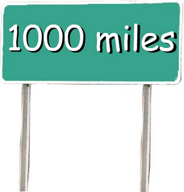

Basic Sentences
- 2.1 Caesar exercitum habet.
- 2.2 Ambulamus.
- 2.3 Punica regna vides. (Punica = Punic/Carthaginian) (Aeneid Book I)
- 2.4 Vivunt multos annos.
Topics this Chapter
Transitive VS Intransitive
Transitive verbs require a direct object. For example, “cut” is a transitive verb and “the rope” is the object in the sentence “He cut the rope”. It doesn't make much sense to have cut without an object. “He cut...” is incomplete.
The tip for remembering the name is to think of transitive verbs as transferring their action to the object. Transitive and transfer both start with the prefix trans-, which means “across”.
They shot the basketball.
The man loves candy.
I hate broccoli.
She carried her homework.
Intransitive verbs don't take an object. Here are some examples of intransitive verbs:
He walked.
I laughed.
The cat meowed.
Mr. Cornish winked.
There is an amazing video that does a great job explaining this another way as well. Click here to watch it.
The Accusative Case
The accusative case is used for the direct object of transitive verbs and to show extent or duration. It will be used in other ways, too, that we will learn in future chapters. In the masculine and feminine singular it always ends in -m (just like with the English words whom and him); in the masculine and feminine plural, it always ends in -s; and in the neuter plural, it always ends in -a. In English we do not have an accusative case; instead, we call it the objective case. Below you will see a familiar chart from Chapter 1. This chart will continue to show up and you would be wise to commit its content to heart. You'll notice that the accusative endings are now filled in and that I have color-coded them BLUE.
| Feminine | Masculine | Neuter | |
|---|---|---|---|
| Singular | 1st Declension | 2nd Declension | 2nd Declension (n) |
| Nominative | -a | -us/r | -um |
| Genitive | |||
| Dative | |||
| Accusative | -am | -um | -um |
| Ablative | |||
| Plural | |||
| Nominative | -ae | -i | -a |
| Genitive | |||
| Dative | |||
| Accusative | -as | -os | -a |
| Ablative |
Let's take a look at some of the Basic Sentences to see the accusative case in use.
2.1 Caesar exercitum habet.
In this sentence you can see that Caesar is the subject because his name is in the nominative case, which we learned about last chapter. The word exercitum is in the accusative case and is therefore the direct object. Then you are left with the verb at the end. This should unsettle you a bit, because you might notice in the chart above that the ending “um” could also be nominative! Unfortunately in Latin there will be times when a word has an ending that is ambiguous. In this example we can determine that exercitum is not nominative because the word Caesar can ONLY be nominative, which means that exercitum must be accusative. Now, you might also notice that the word order of this sentence is different from the way we would say it in Latin. The translation of this sentence is:
2.1 Caesar has an army.
So, what you are going to need to do is as you read from left to right in a Latin sentence, you can begin to fill in the pieces of the English sentence one word at a time. Just remember that the word order in Latin is not fixed the way it is in English!
Extent of Space and Duration

In addition to being the direct object in a transitive sentence, the accusative case can be used to show how long something took place or how far in distance something is. These uses are usually coupled with an INTRANSITIVE verb and should not be confused with a direct object. Basic Sentence 2.4 shows this very well.
2.4 Vivunt multos annos
The verb “vivunt” means “They live” which is an intransitive verb. But wait! Why is there an accusative there then?! It is because here it is showing us how long they lived.
2.4 They live for many years.
This would also work for distance if I wanted to say something like this: They traveled for many miles. “For many miles” would be expressed in Latin with the accusative case.
Person in the Present Tense
Let me start by referencing a video (by the same YouTube user I frequently recommend). Watch it here.
Every verb in Latin, as well as in English, has a person (1st, 2nd, and 3rd) and a number (singular and plural).
In Latin the person and number of a verb is known just like how we identify noun case...by the ending of the word.
Take a look at these charts. The first one shows JUST the endings that will be at the end of a Latin verb. The second shows the English pronouns that are equivalent to each Latin ending. The third shows an actual Latin verb with an English translation and I have highlighted how the Latin ending and the English subject correspond to one another.
| Latin | singular | plural |
|---|---|---|
| 1st person | -o (sometimes m) | -mus |
| 2nd person | -s | -tis |
| 3rd person | -t | -nt |
| English | singular | plural |
|---|---|---|
| 1st person | I | we |
| 2nd person | you | you all |
| 3rd person | he/she/it | they |
| Both | singular | plural |
|---|---|---|
| 1st person | Video I see | Videmus We see |
| 2nd person | Vides You see | Videtis You all see |
| 3rd person | Videt He sees | Vident They see |
Now, all verbs are different, so how do you actually go about adding these new endings to a verb?! 1st person singular is easy. The 1st principal part of a dictionary entry for a verb IS the 1st person singular “I am” form. The last 5 forms you will need to find the stem of the verb in order to add on the endings. To find the stem, take the second principal part and chop off the “-re”. That's it! So, for a verb like “do, dare, dedi, datum” the way to say “I give” is just the first principal part “do”.
Do = I give.
If you want to say “we give” you are going to have to add the 1st person plural ending “-mus” to the stem of the verb which is “da”.
Da + mus = damus = we give.
Now the whole world of verbs is open to you! The only caveat you need to know is that these rules only apply to verbs in the present tense. English has many ways to express things in the present tense. I can say “I give”. I can also say “I do give” or “I am giving”. What you have just learned in this section will cover ALL of those instances in Latin. So...
Dant = they give/they do give/they are giving.
Use whichever interpretation fits best in context.
SUM, ESSE (IRREGULAR)
One very last thing...I promise. Every time you learn something new about verbs you are likely going to have to learn a separate rule for the verb “to be” because the verb is irregular in Latin like it is in many languages. Think about it in English. “I am” becomes “you are” which becomes “it is”. You have seen this verb already in chapter 1 and have seen two out of its six forms. So, here it is. Remember them well.
| Sum, esse, fui, futurum | singular | plural |
|---|---|---|
| 1st person | sum | sumus |
| 2nd person | es | estis |
| 3rd person | est | sunt |
There is a great explanation as to why these forms are irregular here.
Vocabulary
| Word | Definition |
|---|---|
| Amo, amare, amavi, amatum | To love |
| Paro, parare, paravi, paratum | To prepare |
| Do, dare, dedi, datum | To give |
| Specto, spectare, spectavi, spectatum | To watch |
| Video, videre, vidi, visum | To see |
| Habeo, habere, habui, habitum | To have |
| Maneo, manere, mansi, mansum | To remain |
| Ambulo, ambulare, ambulavi, ambulatum | To walk |
| Via, ae f | road/way |
| Verbum, i n | word |
| Oculus, i m | eye |
| Annus, i m | year |
| Ager, agri m | field |
| Imperium, i n | power |
| Exercitum, i n | army |
| iam | Now, already |
| Semper | always |
| non | not |